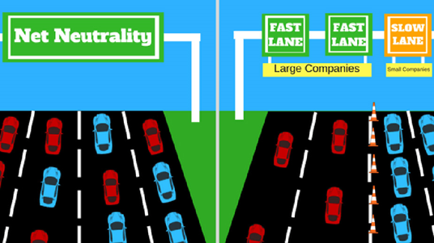

Web Neutrality
Qué es Web Neutrality?
Es el principio por el cual los proveedores de servicios de Internet y los gobiernos que la regulan, deben tratar a todo tráfico de datos que transita por la red de igual forma indiscriminadamente.

Ventajas de Web Neutrality?
- Crea un campo de juego igual.
Misma oportunidad para todos
- Protege la innovación.
Cualquier empresa o persona puede innovar para hacer negocios, empezando todos desde la misma posición.
- Otorga a todos libertad de expresión
No hay censura para contenido siempre que cumpla las obligaciones legales.
- Las actividades ilegales son monitoreadas.
Desventajas de Web Neutrality?
- Se consumen enormes cantidades de datos sin compensación.
Existen empresas que transmiten contenido de manera legal, pero también transmisiones ilegales.
- El ISP podría asignar prioridades
Dependiendo el tipo de transmisión si no existiera la neutralidad, los ISP podrían asignar prioridad y velocidad, esto causa ralentización en algunas señales.
- El contenido cuestionable prospera en la neutralidad de la red.
El contenido considerado ofensivo no es filtrado en su totalidad solo cunado se implementa herramienta, como por ejemplo en contenido familiares.
Cómo impacta en los negocios?
El servicio del ISP podría incluir cuotas dependiendo de la industria, el tamaño y el tipo de oferta online que los negocios tienen
Las empresas pequeñas y startups podrían verse limitadas debido a los precios definidos de los ISPs